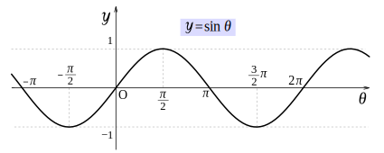

Animace
V této části se dozvíte, jakým způsobem můžete provádět animaci. Zatím jsme s Three.js pracovali jen tak, že jsme vždy scénu vykreslili na canvas jediným zavoláním metody render a potom jsme již nic nedělali. Pro vytvoření animace musíme metodu render volat opakovaně a například postupně posouvat nějaký objekt. V této části si ukážeme jak to správně dělat.
Jak funguje animace
Animace funguje tak, že máme spoustu obrázků, které se od sebe drobně liší. Když poté tyto obrázky spustíme za sebou, tak například uvidíme, že se něco pohybuje. Myslím že většina z vás tohle ví. Pokud například budeme chtít animovat pohyb objektu, tak vždy objekt trochu posuneme a vykreslíme na canvas pomocí metody render. Poté objekt znova posuneme a opět jej vykreslíme na canvas. Takto to budeme dělat pořád dokola asi 60x za sekundu a na canvasu budeme vidět, že se objekt pohybuje.
Vytvoření animační smyčky
Pro provádění animace budeme muset zajistit, aby se nějaký kód pravidelně spouštěl v nějakém časovém intervalu. Možná by vás napadlo použít funkci setInterval. To by sice fungovalo, ale nebylo by to úplně přesné. Máme lepší, přesnější způsob jak animační smyčku vytvořit a ten si v této části ukážeme.
Three.js nám umožňuje nastavit funkci, která se bude volat při každém překreslení obrazovky. Nastavíme ji pomocí metody setAnimationLoop na WebGLRendereru. Alternativně bychom mohli používat funkci requestAnimationFrame, která prohlížeči říká aby zavolal předanou funkci při dalším překreslení obrazovky. Jelikož to ale můžeme nechat na Three.js, tak se tím nebudeme zabývat. Pokud byste se ale chtěli jen tak dozvědět jak funkci requestAnimationFrame k vytvoření animační smyčky použít, tak můžete navštívit mé webové stránky o programování her v JavaScriptu, které jsem kdysi dávno vytvořil. Tam mám návod k vytvoření Main Loop, kterému se také často říká Game Loop a je to v podstatě stejné jako animační smyčka.
Startovní kód
Abychom si vytvoření animační smyčky mohli vyzkoušet, tak začneme tím, že si vytvoříme základní scénu. Vytvořte si nový projekt pomocí startovního kódu z části o Webpacku a do JavaScript souboru ve složce src vložte následující kód, ve kterém jen vytváříme scénu, přidáváme do ní kostku a kameru a nakonec vytváříme renderer.
import './style.css';
import * as THREE from 'three';
// vytvoření scény
const scene = new THREE.Scene();
// vytvoření kostky
const cube = new THREE.Mesh(
new THREE.BoxGeometry(1, 1, 1),
new THREE.MeshBasicMaterial({ color: 0x78E8FA })
);
// přidání kostky do scény
scene.add(cube);
// nadefinování velikosti canvasu
const sizes = {
width: 700,
height: 400
};
// vytvoření kamery
const camera = new THREE.PerspectiveCamera(75, sizes.width / sizes.height);
// posunutí kamery dozadu
camera.position.z = 3;
// přidání kamery do scény
scene.add(camera);
// vytvoření rendereru
const renderer = new THREE.WebGLRenderer({
canvas: document.getElementById("WebGLCanvas")
});
// změnění velikosti canvasu, který jsme
// rendereru při jeho vytváření předali
renderer.setSize(sizes.width, sizes.height);Použití metody setAnimationLoop
Poté co jste si zkopírovali startovní kód, můžeme na rendereru zavolat metodu setAnimationLoop a zařídit tak, aby se při každém překreslení obrazovky zavolala funkce, která vykreslí scénu na canvas. Tuto funkci můžeme pojmenovat třeba jako tick.
/* ... */
function tick() {
// vyrenderování scény na canvas
renderer.render(scene, camera);
}
// nastavení, aby se funkce tick volala
// při každém překreslení obrazovky
renderer.setAnimationLoop(tick);Pokud si aplikaci spustíte, tak na canvasu uvidíte vykreslenou kostku. Ta se teď vykresluje asi 60x za sekundu. Záleží na tom, jakou máte obnovovací frekvenci monitoru.
Animace posunu kostky
V naší tick funkci můžeme měnit pozici kostky a při každém jejím zavoláním se tedy kostka o něco posune. Můžeme třeba zvyšovat pozici kostky na ose X a kostka se tak bude pohybovat směrem doprava.
/* ... */
function tick() {
// posunutí kostky na ose X
cube.position.x += 0.01;
// vyrenderování scény na canvas
renderer.render(scene, camera);
}
/* ... */Po spuštění aplikace se kostka bude posouvat směrem doprava.
Delta time
Naše kostka se ne vždy bude pohybovat stejně na všech zařízeních. Záleží na obnovovací frekvenci monitoru. Pokud bychom měli monitor s vyšší obnovovací frekvencí, tak by se kostka pohybovala rychleji a pokud bychom měli monitor s nižší obnovovací frekvencí, tak by se pohybovala pomaleji. Proto si musíme pro pohyb kostky zjistit delta time a ten při posunu kostky použít. Jedná se o čas, který uběhl mezi aktuálním a minulým snímkem. Využijeme k tomu Three.js třídu jménem Clock. Je to třída, která se používá ke sledování času. Jsou to tedy takové hodiny. Více se o třídě Clock můžete dozvědět v dokumentaci. Pokud vytvoříme její instanci bez žádných parametrů, tak tím hodiny automaticky i spustíme a začneme měřit čas. Ve funkci tick potom můžeme použít metodu getDelta a získáme tím čas mezi minulým a aktuálním snímkem. Tímto časem vynásobíme vzdálenost o kterou chceme kostku posunout.
/* ... */
const clock = new THREE.Clock();
function tick() {
// získání času mezi aktuálním a minulým snímkem
const delta = clock.getDelta();
// posunutí kostky na ose X
// - používáme delta time
cube.position.x += 1.5 * delta;
// vyrenderování scény na canvas
renderer.render(scene, camera);
}
/* ... */Pokud si teď aplikaci spustíte, tak se kostka bude pohybovat stejnou rychlostí bez závislosti na tom, jakou máte obnovovací frekvenci monitoru.
U metody getDelta bych chtěl zmínit, že se tak úplně nejedná o čas mezi předchozím a aktuálním snímkem. Třída Clock obsahuje vlastnost jménem oldTime, která je při spuštění hodin nastavena na 0. Když potom pomocí metody getDelta získáme čas, tak tím získáme aktuální čas mínus čas uchovávající vlastností oldTime. Poté se vlastnost oldTime nastaví na aktuální čas. Takže metoda getDelta není nijak spjatá s tím, kdy proběhl poslední snímek, ale kdy jsme ji naposled volali. Pro většinu případů je použití třídy Clock dostačující, pokud ale děláte něco, kde záleží na časové přesnosti, tak je možná lepší pro animační smyčku použít nějakou knihovnu. Já třeba rád používám knihovnu jménem MainLoop.js. Je podle mě pro tyto věci lepší použít něco co už někdo vytvořil, otestoval a funguje to přesně.
Posouvání kostky pomocí funkce sinus
Naši kostku momentálně posouváme jen doprava a nikdy ji nezastavíme. Teď si jen tak pro ukázku zkusíme kostku posouvat doprava a v určitém bodu ji pošleme zase zpátky doleva. Budeme to tak neustále opakovat. Mohli bychom to sice udělat pomocí podmínek, ale použijeme k tomu funkci sinus, protože vám chci ukázat, jak můžeme z hodin získat uplynulý čas od jejich startu. Pokud nevíte co je funkce sinus, tak nevadí. Následující obrázek ukazuje její graf, kde můžete vidět že čím se číslo, které jí předáváme zvětšuje, tak nám výsledné hodnoty tvoří takové vlny. Takže můžeme funkci sinus v kódu předávat uplynulý čas od startu aplikace, a budeme postupně dostávat hodnoty, které tyto vlny budou tvořit. Naše kostka se tedy bude pohybovat tam a zpátky.
Z hodin můžeme uplynulý čas od jejich startu získat pomocí metody getElapsedTime. Získanou hodnotu poté předáme do funkce sinus a její výslednou hodnotu kostce nastavíme jako pozici na ose X. Výslednou hodnotu navíc ještě vynásobujeme dvěma, aby se kostka posouvala po větší vzdálenosti.
/* ... */
function tick() {
// získání času od startu aplikace (hodin)
const elapsedTime = clock.getElapsedTime();
// použití funkce sinus k nastavení pozice kostky
cube.position.x = Math.sin(elapsedTime) * 2;
// vyrenderování scény na canvas
renderer.render(scene, camera);
}
/* ... */Když si teď aplikaci spustíme, tak se nám kostka bude opakovaně posouvat doprava a doleva.
Pro tuto část je to vše. Zjistili jste, jakým způsobem můžete ve své Three.js aplikaci provádět animaci. Ukázali jsme si jak můžeme vytvořit animační smyčku a jak provádět animaci tak, aby běžela na všech zařízení stejně rychle. Animační smyčku (nebo také Main Loop a ve hrách Game Loop) budeme používat i v jiných částech tutoriálu, jelikož nemusí sloužit jen pro animaci, ale můžeme s její pomocí například provádět i fyziku a tak podobně.